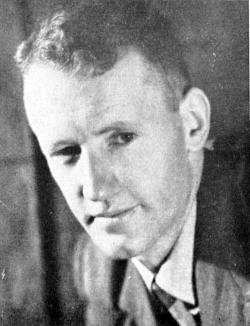
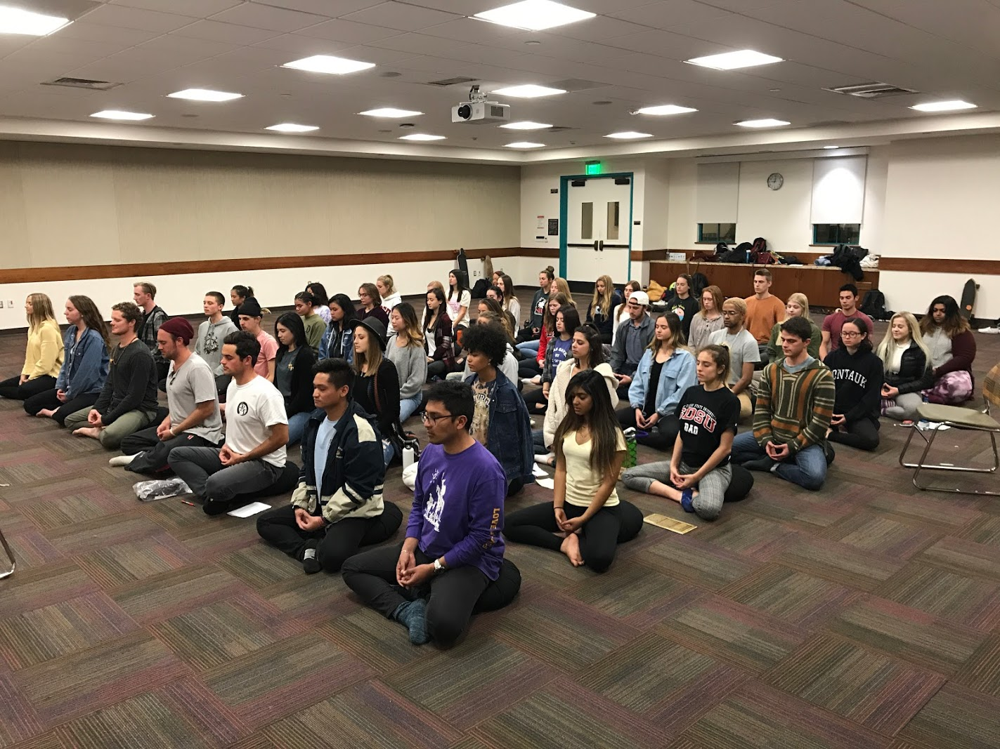
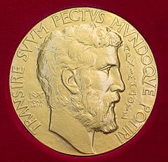
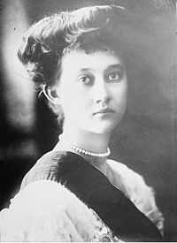

From today's featured article
Ian Smith (1919–2007) was Prime Minister of Rhodesia (or Southern Rhodesia; today Zimbabwe) from 1964 to 1979. During the Second World War, he served as a Royal Air Force fighter pilot in the Middle East and Europe, suffering permanent facial and bodily wounds. In 1962 he helped form the all-white, firmly conservative Rhodesian Front, which called for independence without an immediate shift to black majority rule. He led the predominantly white government that unilaterally declared independence from the United Kingdom in 1965, after prolonged dispute. During Smith's premiership, the Bush War pitted the unrecognised administration's forces against communist-backed black nationalist guerrilla groups. His government endured in the face of United Nations economic sanctions with the assistance of South Africa and, until 1974, Portugal. Smith is still venerated by some, while critics describe an unrepentant racist whose policies and actions caused the deaths of thousands and contributed to Zimbabwe's later crises. (Full article...)
Recently featured: Loss of MV Darlwyne Bill Brown (cricketer) Octopus
Archive By email More featured articles
Did you know...
- ... that Dharma Bum Temple helped organize the first Buddhist college fraternity in the United States, Delta Beta Tau (pledge class pictured), at San Diego State University?
- ... that Chinese-Indonesian businessman Sutanto Djuhar was the last surviving member of the "Gang of Four" of the Suharto era?
- ... that the trunk of the King Oak is more than 8 metres (26 ft) in girth?
- ... that Sara Hershkowitz, who usually appears on the opera stage as the Queen of the Night and Zerbinetta, parodied Donald Trump in Ligeti's Mysteries of the Macabre at the Lowlands Festival?
- ... that prior to the first town council elections in Loxahatchee Groves, Florida, a political forum for the candidates was hosted at a nudist resort?
- ... that Michael Peter Kaye was the first director of what became the largest registry of heart and lung transplantation data in the world?
- ... that the purple eagle ray (Myliobatis hamlyni) was named after Ronald Hamlyn-Harris, director of the Queensland Museum?
- ... that the sport of duck netting may be unique to the Imperial House of Japan?
Archive Start a new article Nominate an article
In the news
- In mathematics, the Fields Medal (pictured) is awarded to Caucher Birkar, Alessio Figalli, Peter Scholze and Akshay Venkatesh.
- A 6.4 magnitude earthquake strikes Lombok, Indonesia, killing at least 16 people.
- In cycling, Geraint Thomas wins the Tour de France.
- Following allegations of sexual misconduct, American Archbishop Theodore McCarrick becomes the first cleric to resign from the College of Cardinals since 1927.
- The longest total lunar eclipse in the 21st century occurs.
Recent deaths: Mary Carlisle Tony Bullimore Ron Dellums Chrysa Spiliotis
Other recent events Nominate an article
On this day
August 2: Republic Day in Macedonia
- 216 BC – Second Punic War: Outnumbered Carthaginian forces led by Hannibal defeated a Roman army, near the town of Cannae in Apulia in southeast Italy.
- 1790 – The first United States Census was conducted, with the United States residential population enumerated to be 3,929,214.
- 1914 – World War I: Marie-Adélaïde, Grand Duchess of Luxembourg (pictured), and Prime Minister Paul Eyschen surrendered to the invading German army and the nation remained occupied for the rest of the war.
- 1932 – At the California Institute of Technology, Carl David Anderson proved the existence of antimatter when he discovered the positron.
- 1990 – Iraq invaded Kuwait, overrunning the Kuwaiti military within two days, and eventually sparking the outbreak of the Gulf War seven months later.
Bertha Lutz (b. 1894) · Betsy Bloomingdale (b. 1922) · Jean-Pierre Melville (d. 1973)
More anniversaries: August 1 August 2 August 3
Archive By email List of historical anniversaries/p>